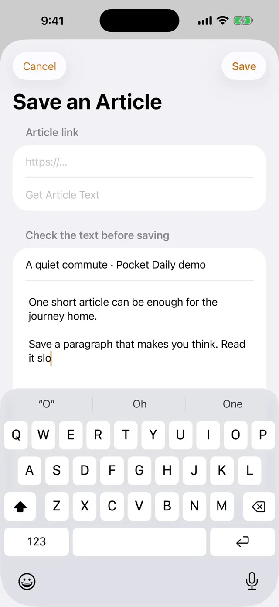
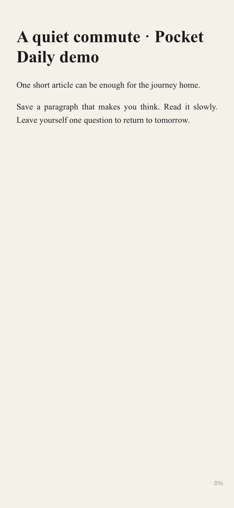
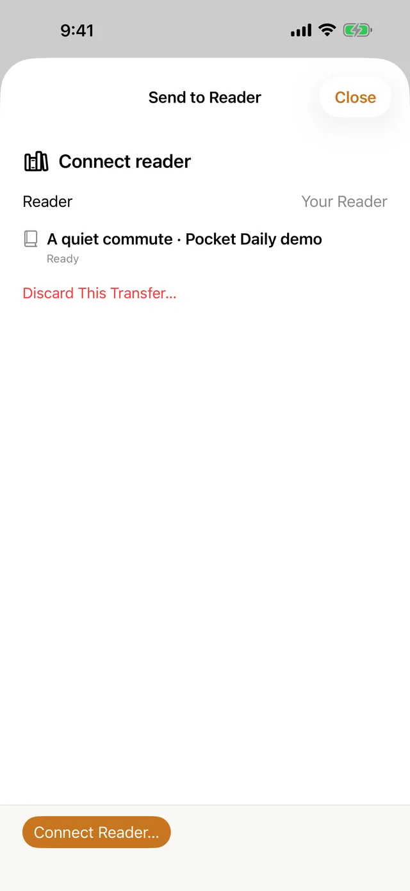
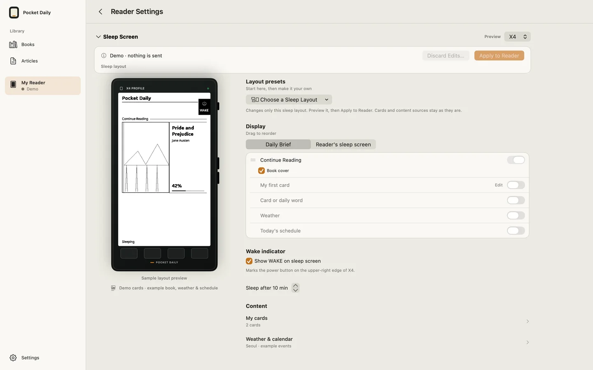

01
Keep something worth reading
Review a shared link or pasted text and save it in Articles. Read the saved body right in the app.

READ HERE. BRING IT WITH YOU.
Reading on iPhone, iPad and Mac.
Reader transfers, Home and Sleep in the same app.
Read in the app when your reader is elsewhere. When connected, send the same book and exchange reading places. You choose whether to accept a new place.
App release in preparation · Full X3/X4 companion features require Pocket Daily firmware.


ONE READING ROUTINE
Picture preparing something for the journey home. Keep working with the same article inside the app, from saving to reading to a transfer task.
01
Review a shared link or pasted text and save it in Articles. Read the saved body right in the app.

02
The saved article opens as a book. Choose a comfortable page and keep reading when your reader is elsewhere.

03
Send to Reader… keeps that article in a transfer task. Connect the intended reader, then choose Send.

YOUR READER, YOUR ROUTINE
Preview and apply Home and Sleep layouts in Reader Settings. Arrange your current book, original cards, optional city weather and events. Review and apply cards and content separately.
With the same book file, a connected reader can exchange reading places. iCloud shares places between Apple devices; it does not distribute the book files for you.
Explore Home and Sleep →
A READER IN ITS OWN RIGHT
The Library works independently of a hardware connection. Bring EPUBs, turn text or Markdown into books, and choose comfortable type, spacing and margins. Pick Paper, White or Night pages.
Keep articles and HTTPS RSS or Atom subscriptions in the app too. Read saved text or prepare selected articles for a reader. The article list stays local to this device.
Start reading in the app →CHOOSE WHAT YOU NEED
CrossPoint is free, open-source firmware. Its web transfer and free companion apps are options if you only need to send files or articles. Full Pocket Daily companion features require installing supported Pocket Daily firmware, so weigh that change against what already works for you.
CrossPoint · CrossPoint Sync
Official information checked October 30, 2026 · not a hands-on comparison of competing apps.
CHECK YOUR SETUP
Check supported formats, connection methods and firmware requirements first. The app is being prepared for release. Every feature is free, with optional one-time support in Settings. Support unlocks no features and is not a subscription.